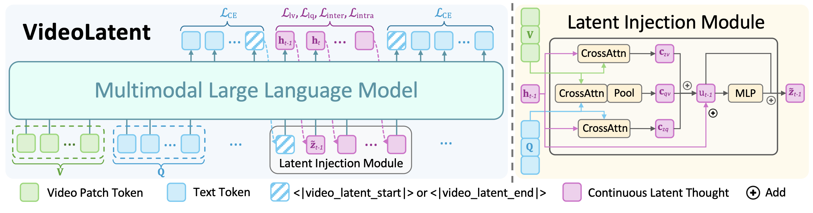
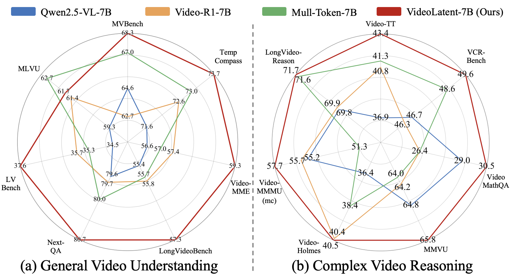
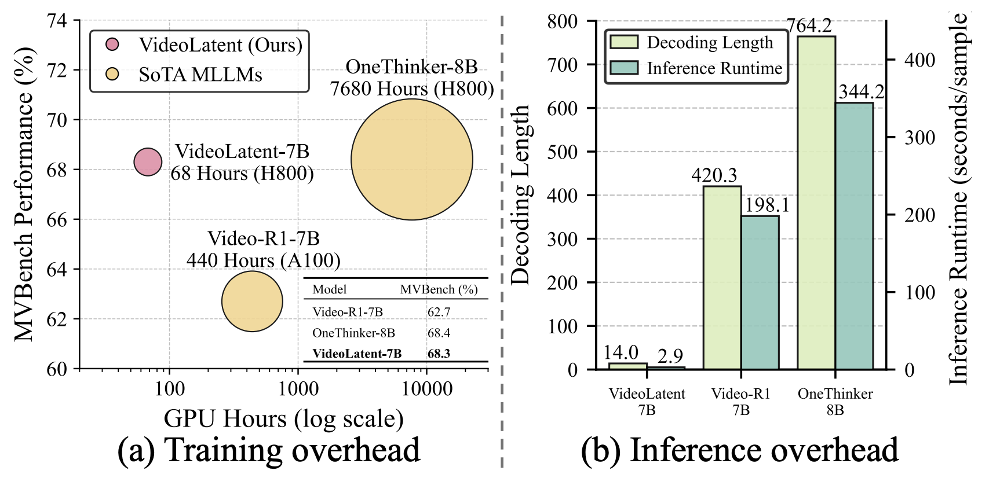
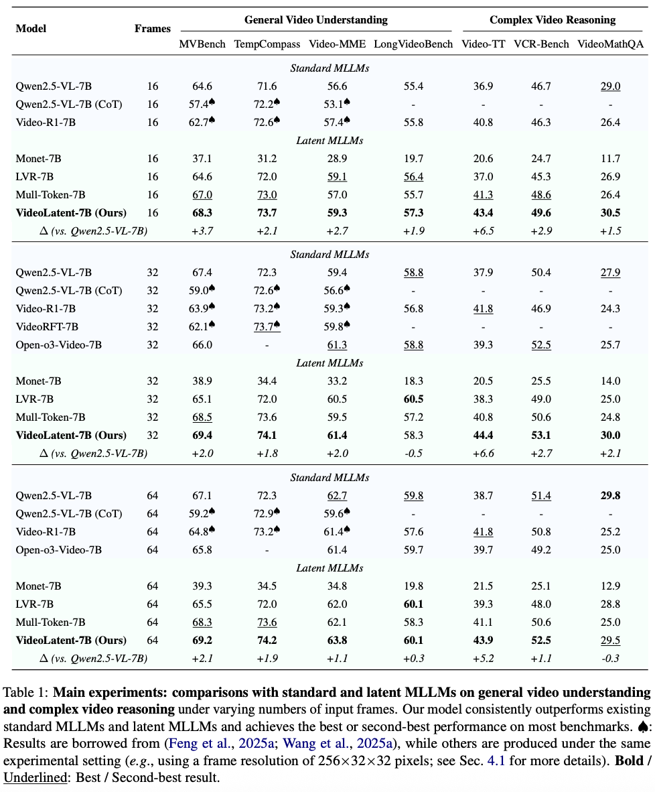
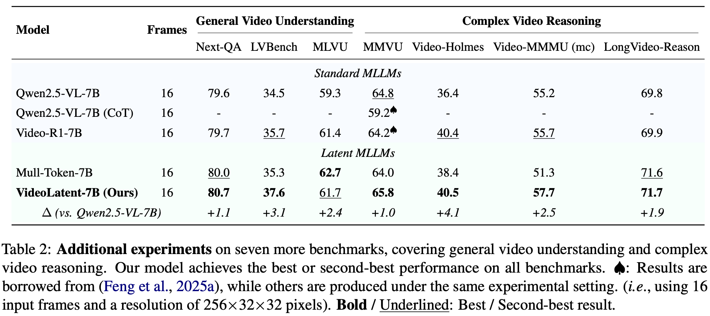
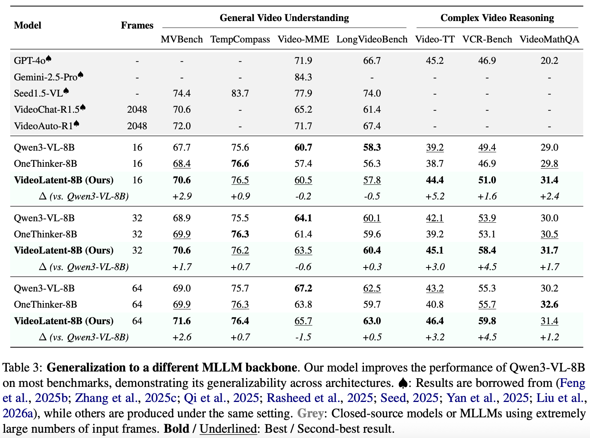
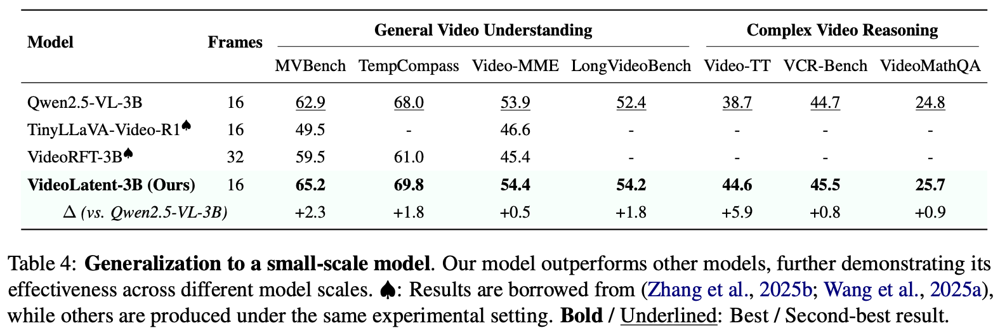
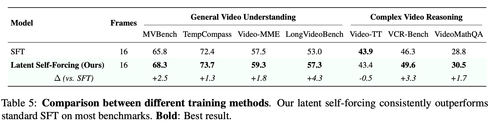

Examples


Recent advancements in chain-of-thought (CoT) reasoning have shown promise in enhancing video understanding and reasoning capabilities of multimodal large language models (MLLMs). However, existing CoT-based MLLMs require labor-intensive CoT annotations and incur substantial training and inference overhead. While visual latent reasoning has emerged as a more efficient alternative, existing methods primarily focus on image tasks and heavily rely on additional supervision signals for visual latent generation (e.g., CoT traces, auxiliary images, or fine-grained annotations), limiting their scalability and transferability to video tasks.
To bridge this gap, we introduce VideoLatent, a novel MLLM equipped with a latent injection module tailored for video understanding and reasoning. Specifically, VideoLatent learns to perform visual latent reasoning using a new latent self-forcing training paradigm, which comprises latent alignment and latent diversity objectives, and relies solely on standard video-question-answer triplets.
Extensive experiments across 14 benchmarks demonstrate that our model consistently outperforms existing standard and latent MLLMs on general video understanding and complex video reasoning. Compared with Video-R1, our VideoLatent achieves superior computational efficiency, reducing training/inference overhead by ∼6× / ∼68×. Moreover, experiments demonstrate that our method has strong generalizability to different MLLM backbones and different model scales.

Figure: Overview of VideoLatent. Given an input video and a text question, our VideoLatent learns to perform visual latent reasoning (see Sec. 3.2) using our proposed latent self-forcing training paradigm (see Sec. 3.3). Specifically, we introduce a latent injection module to prevent self-generated latent thoughts from drifting away from the video and question context. Furthermore, our latent self-forcing covers both latent alignment and latent diversity objectives to enhance video-language learning. Detailed symbol definitions are provided in Sec. 3.

Figure: Effectiveness of VideoLatent. Our VideoLatent-7B consistently outperforms existing standard and latent MLLMs across fourteen benchmarks under the same experimental settings (see Tab. 1 and Tab. 2 for more details), covering both general video understanding and complex video reasoning.

Figure: Efficiency of VideoLatent. Our VideoLatent achieves stronger or comparable performance with existing CoT-based MLLMs, while achieving superior computational efficiency.
Key findings. To ensure a comprehensive evaluation, we conduct experiments on fourteen video-language benchmarks, covering both general video understanding and complex video reasoning.
Our experiments yield several key findings:
(1) VideoLatent consistently outperforms both standard and latent MLLMs across diverse benchmarks and experimental settings, demonstrating the effectiveness of our proposed method;
(2) Our method exhibits strong generalizability to different MLLM backbones and different model sizes;
(3) Our VideoLatent achieves superior computational efficiency compared with CoT-based MLLMs;
(4) Visualization and ablation studies further demonstrate the effectiveness of our design.





If you find VideoLatent useful for your research, please consider giving this repository a star and citing our paper as follows:
@article{hu2026videolatent,
title = {VideoLatent: Video-Language Learning via Latent Self-Forcing},
author = {Zi-Yuan Hu and Zicong Tang and Shijia Huang and Yanyang Li and Michael R. Lyu and Liwei Wang},
journal = {arXiv preprint arXiv:2510.20579},
year = {2026}
}